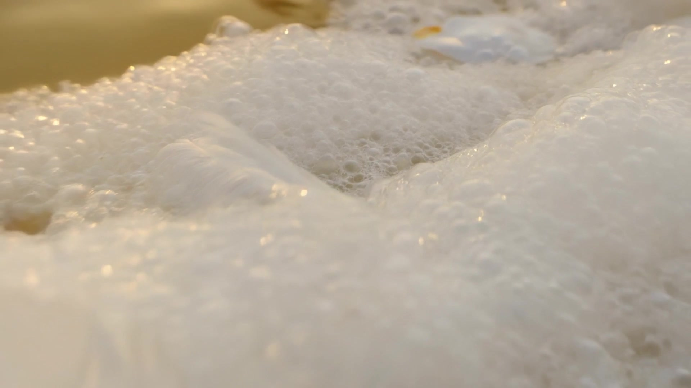
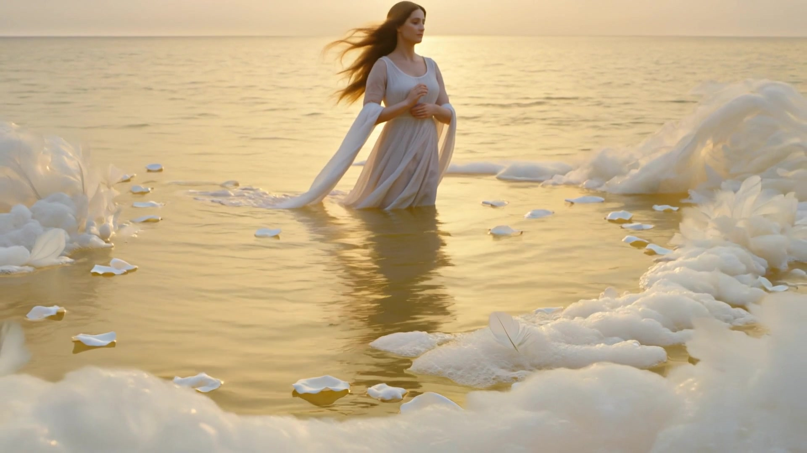

A Hook-and-Twist Study in Mise-en-Scène and Montage
Ex spuma, forma
Individual AI Video · Mise-en-Scène and Montage
An eight-second video that opens as abstraction and closes as a goddess. What the eye cannot read becomes, in a single movement of the camera, Aphrodite.
The final video
Born of Foam (Jooyeon Han, 2026). Watch with sound. Beauty arrives before it can be named.
An extreme close-up of sea foam and light, beautiful but unreadable, pulls back to reveal a goddess rising from the water. The everyday act of looking becomes a small myth of recognition.
Rhetorical message. Beauty is not given by the subject but granted by the frame. We see a goddess only when the distance allows it.
This video was made for the AI Mise-en-Scène and Montage assignment, which asks for a short hook-and-twist narrative that demonstrates the technical vocabulary of the course. The brief is deceptively simple. A hook must arrest the viewer in the first three to five seconds, a twist must reframe the whole piece in the last three to five seconds, and the reversal must be earned through visual cues rather than text or voiceover [19]. The constraint is the lesson. Eight seconds leaves no room for exposition, so every choice of framing, light, and cut has to carry argument on its own. The piece offered here, Born of Foam, treats that constraint as its subject. It is a study of how the frame itself decides what a viewer is able to see.
The hook presents an extreme close-up of pearlescent sea foam and white feathers on shimmering water, lit by a low golden sun. For the first four seconds the image is beautiful and unreadable, an abstraction of white and gold that the eye enjoys without recognizing. The twist arrives as a single slow dolly backward. The abstraction resolves, without a cut, into the figure of a woman rising from the sea in a flowing gown, foam and rose petals turning around her, the long tradition of the Aphrodite who is born of foam made suddenly legible. Nothing is added at the reveal. The goddess was present in the first frame. The viewer simply could not read her until the camera pulled back and granted the distance that legibility requires.
The analysis that follows reads the piece through the working vocabulary of EST 240. It treats the close-up, the dolly back, and the dissolve as choices in mise-en-scène and montage, and it places the reversal within three theoretical frames that the course has supplied, the naturalization of codes in Daniel Chandler, the organization of the gaze in Laura Mulvey, and the second-order signification of the color white in Roland Barthes. The aim throughout is to show that the rhetorical effect is not a happy accident of a generative model but the result of decisions that can be named and defended.
The hook is built on a single principle of composition, that an extreme close-up converts a recognizable subject into pure texture. Bordwell and Thompson [3] describe framing as the most basic instrument of mise-en-scène, the means by which a film decides what the viewer may and may not attend to. The close-up here is not used to magnify a detail of a known whole, as it usually is, but to withhold the whole entirely. The foam, the feathers, and the strands of pale hair fill the frame at a scale that defeats recognition. The viewer is given beauty without reference, an image that asks to be admired before it can be understood.
The micro-movements within the static frame are what keep the hook alive. The foam swells and dissolves, the scattered light twinkles across the surface, a single droplet slides and catches the sun. These small motions supply the sense of a living surface that a frozen image would lack, and they hold attention through the four seconds the hook requires without ever resolving the question of what is being seen. The lighting is doing rhetorical work as well. The warm, low, volumetric sun lends the abstraction a sacred quality before any figure appears, so that the eventual reveal feels less like a surprise than like a recognition of something the light had already promised.
The twist is carried by two coordinated devices, a camera movement and an edit. A slow, steady dolly backward pulls away from the foam, and at the hinge of the piece a brief cross-dissolve carries the abstract close-up into the wider shot in which the goddess resolves. The dissolve is the central montage choice. Where a hard cut would assert the reversal abruptly, the dissolve lets one image bleed into the next, so the foam and the figure occupy the same frame for a moment before the figure wins. Chandler [4] lists the dissolve among the basic editing transitions, noting that it conventionally signals a soft passage rather than a rupture, and that convention is exactly what the piece exploits. The reversal feels less like a reveal imposed on the viewer than like a recognition that surfaces from within the image.
The dissolve also operates as a match on form. The pearlescent texture of the hook is continuous with the curve of the shoulder and the fall of the hair that emerge in the twist, so the two shots blend across the transition as a clarification of the same surface rather than a replacement of one subject by another. Kuleshov and Eisenstein argued that meaning in moving images is produced between shots, in the relation the viewer is led to construct across an edit [3]. Here that relation is built precisely at the dissolve, between the abstraction that precedes it and the figure that follows, and the viewer who completes the relation is the one who makes the meaning.
The assignment asks for the skillful use of at least four concepts drawn from mise-en-scène and montage. The piece deploys four, two from each domain, and each is used in the service of the central reversal rather than as ornament.
A low, warm, volumetric sun haloes the surface, lending the abstraction a sacred quality before any figure is visible. The light makes the goddess felt before she is seen.
The extreme close-up frames a recognizable subject as pure texture. Framing, not subject, decides what the eye is able to read.
A single slow dolly backward is the rhetorical engine of the piece. The pull away is what converts abstraction into figure.
A brief cross-dissolve carries the abstract close-up into the wider shot, blending foam and figure for a moment so the reversal reads as a soft passage rather than a rupture.
Four class concepts in total, two from each domain, each in service of the reversal rather than as ornament.
The piece can be read more fully through three frames the course has supplied. Each connects a formal choice to a body of theory, and together they show that the reversal is an argument about perception rather than a visual trick.
Daniel Chandler. Codes become naturalized when viewers stop noticing them [4]. The convention by which an extreme close-up reads as abstract texture is one such code, so habitual that the viewer mistakes it for a property of the image rather than a convention of framing. The dolly back denaturalizes the code. The surface that read as abstraction is shown to have been a body all along, and the viewer is made aware that it was the frame, not the subject, that had decided what could be seen.
Laura Mulvey. The image organizes a way of looking [14]. As the goddess resolves into view she becomes a figure composed and lit to be looked at, and the slow reveal stages the very to-be-looked-at-ness that Mulvey describes. The piece does not simply present a beautiful figure. It makes the viewer aware of the position of admiring spectatorship into which the image places them, and of the long tradition of the displayed female nude in Western art to which the Aphrodite motif belongs.
Roland Barthes. Signs carry a second order of meaning beyond their literal denotation [2]. Foam denotes sea spray. It connotes purity, birth, and the sacred, and the myth of Aphrodite is already encoded in the color white before any figure appears. The piece lets that mythic meaning surface slowly, so that the viewer feels the significance of the image arrive before they are able to name its source.
The brief asked for a hook, a twist, and four technical concepts in eight seconds. Born of Foam answers with a dolly back and a dissolve that together convert an abstraction into a goddess and, in doing so, make the act of seeing its real subject. The hook withholds through composition. The twist bestows through camera movement and a soft cut. The light prepares the meaning and the dissolve delivers it. Read through Chandler, Mulvey, and Barthes, the reversal is not a surprise but a lesson, that the frame decides what a viewer is permitted to recognize, and that beauty, given the right distance, was there from the first frame.
The video was generated in Kling 3.0 from the single text-to-video prompt below, then trimmed to eight seconds. The prompt is disclosed in full in the spirit of the course requirement to document AI process.
Extreme close up of luminous pearlescent sea foam and white feathers on shimmering golden water, then the camera slowly pulls back to reveal a serene goddess in a flowing white gown standing in the sea, pale hair flowing over noble features, white rose petals and foam swirling around her, golden morning sunlight haloing her figure. Slow steady dolly backward, smooth and continuous, no shake. Oil painting texture, Pre-Raphaelite and Bouguereau aesthetic, pearlescent white and gold palette, soft volumetric light, painterly, ethereal, high detail, 4K.
| Element | Hook (0–3.8s) | Twist (3.8–8s) |
|---|---|---|
| Subject | Pearlescent sea foam, white feathers, drifting hair | A goddess in a flowing white gown rising from the sea |
| Action | Foam swells and dissolves, a droplet catches the light | The figure resolves into view as water streams from her |
| Setting | Extreme close-up of the water surface at dawn | Wide shot of the open sea, foam and rose petals around her |
| Camera | Static frame, almost imperceptible drift | Slow steady dolly backward, settling to a stop |
| Lighting | Low warm volumetric sun, golden sparkle on foam | Golden backlight haloing the figure |
| Color | White and pale gold, abstraction | White and warm gold, figure made legible |
| Transition | Cross-dissolve on matching form, foam texture bleeding into the curve of the shoulder | |
Two stills mark the rhetorical hinge of the piece, the abstraction that opens it and the figure that closes it.


The video was generated entirely in Kling 3.0, the most recent model available at the time of production, using a single text-to-video prompt rather than an image-to-video pipeline. The first generations attempted to stage the whole reveal within one continuous instruction and produced weak, unreadable motion, a useful lesson in the limits of the current models. The working version separated the task the model does well, a single slow dolly back over a coherent scene, from the task it does poorly, a complex multi-stage transformation. An early prompt was also rejected by the platform's content filter for describing a bare figure, and was revised to specify a flowing gown, which both cleared the filter and strengthened the painterly reference to the Pre-Raphaelite tradition.
The ten-second generation was then edited in post. It was cut into a hook clip and a twist clip, rejoined with a cross-dissolve on matching form, and trimmed to eight seconds to meet the brief. This editing step is where the montage of the piece physically lives, the dissolve and the match are decisions made in the cut rather than effects requested from the model. The disclosure of this process, including the failed attempts, is offered in the spirit of the assignment's requirement to document AI craft honestly.